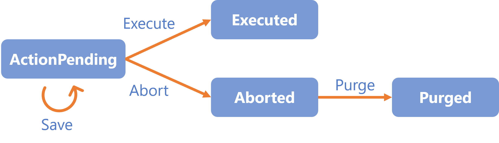
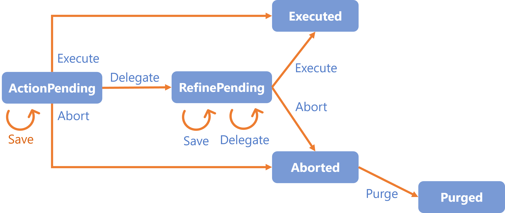
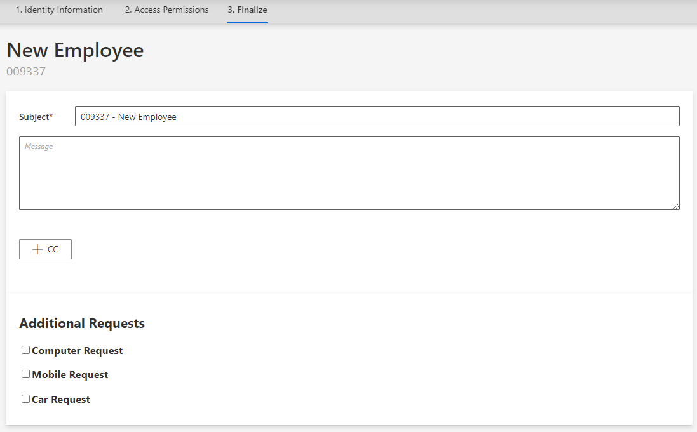
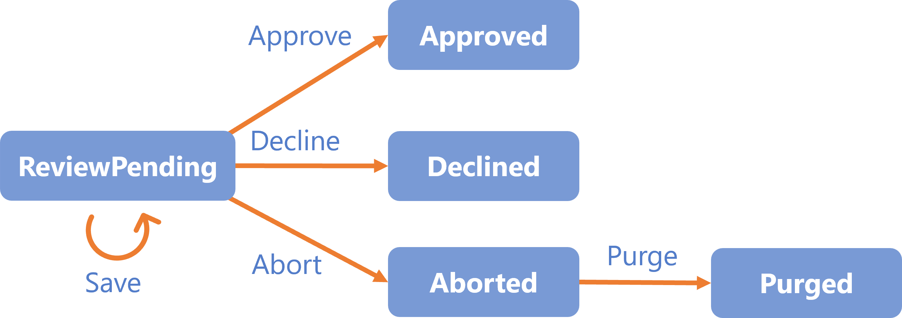
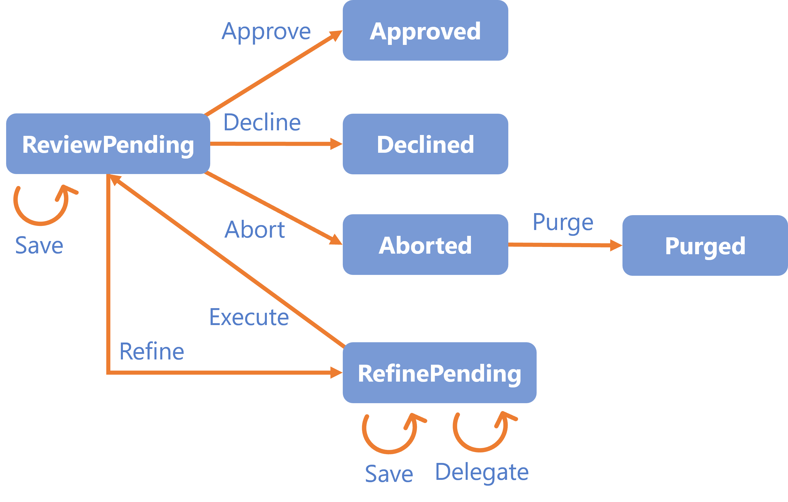
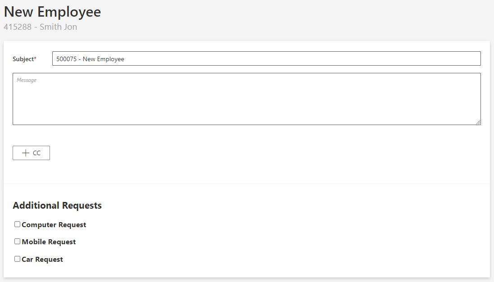

Activity Templates
This section describes the activities that constitute and model a Workflow . Each activity is assigned a template, made of states and transitions.
Overview
Going through an activity means going through states and transitions.
By default, Identity Manager's workflow engine implements the following activity templates:
ActionAction With RefineReviewReview With FeedbackContinue WithPersistPersist OnlyResources
Activity Templates
Action
Awaits user modifications without another user's intervention.

ActionWithRefine
Awaits user modifications with the possibility to delegate the action to another user.

The ActionWithRefine activity can be translated into the following form:

Review
Awaits user approval without another user's intervention.

ReviewWithFeedback
Awaits user approval with the possiblity of getting feedback from another user before taking the action.

The ReviewWithFeedback activity can be translated into the following form:

Persist
Saves the workflow's collected data to the repository and triggers dependent processes (i.e. computation of the role model and provisioning).
This activity has only the transition Persist-Invoked-Invoke and the state Persist-Invoked. It has no user interaction, and hence no need for permissions.
PersistOnlyResources
Saves the workflow's collected data to the repository without triggering the dependent processes (i.e. computation of the role model and provisioning).
This activity has only the transition PersistOnlyResources-Invoked-Invoke and the state PersistOnlyResources-Invoked. It has no user interaction, and hence no need for permissions.
For example,
PersistOnlyResourcescan be used in a workflow to add a new user, as we first create a user sheet but without any account, etc.
States
By default, Identity Manager's workflow engine implements the following state templates:
Action-ActionPendingAction-ExecutedAction-AbortedAction-PurgedActionWithRefine-ActionPendingActionWithRefine-ExecutedActionWithRefine-RefinePendingActionWithRefine-AbortedActionWithRefine-PurgedReview-ReviewPendingReview-DeclinedReview-ApprovedReview-AbortedReview-PurgedReviewWithFeedback-ReviewPendingReviewWithFeedback-ApprovedReviewWithFeedback-DeclinedReviewWithFeedback-RefinePendingReviewWithFeedback-AbortedReviewWithFeedback-PurgedContinueWith-InvokedPersist-InvokedPersistOnlyResources-Invoked
Transitions
By default, Identity Manager's workflow engine implements the following transition templates:
Action-ActionPending-SaveAction-ActionPending-ExecuteAction-ActionPending-AbortAction-Aborted-PurgeActionWithRefine-ActionPending-SaveActionWithRefine-ActionPending-ExecuteActionWithRefine-ActionPending-DelegateActionWithRefine-ActionPending-AbortActionWithRefine-RefinePending-SaveActionWithRefine-RefinePending-DelegateActionWithRefine-RefinePending-ExecuteActionWithRefine-RefinePending-AbortActionWithRefine-Aborted-PurgeReview-ReviewPending-SaveReview-ReviewPending-ApproveReview-ReviewPending-DeclineReview-ReviewPending-AbortReview-Aborted-PurgeReviewWithFeedback-ReviewPending-SaveReviewWithFeedback-ReviewPending-ApproveReviewWithFeedback-ReviewPending-DeclineReviewWithFeedback-ReviewPending-RefineReviewWithFeedback-ReviewPending-AbortReviewWithFeedback-Aborted-PurgeReviewWithFeedback-RefinePending-SaveReviewWithFeedback-RefinePending-DelegateReviewWithFeedback-RefinePending-ExecuteContinueWith-Invoked-InvokePersist-Invoked-InvokePersistOnlyResources-Invoked-Invoke